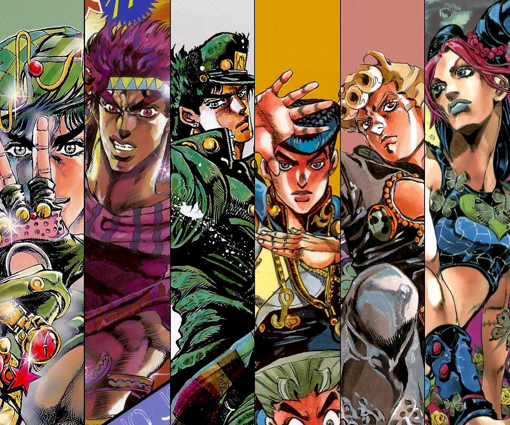

"JoJo your bizare adventure" acompanha as gerações da família Joestar. Cada parte da história foca em um descendente diferente (apelidado de "JoJo") lutando contra ameaças sobrenaturais ao longo das décadas. A série é famosa por seus visuais marcantes, poses icônicas e poderes únicos baseados em energia vital ou habilidades psíquicas chamadas Stands.
